Instituto de Educación Secundaria con ESO, Bachillerato y Formación Profesional.
Ver enseñanzas Contacto“Dar ejemplo no es la principal manera de influir sobre los demás: es la única manera.”
Albert EinsteinEl IES Sabina Mora se encuentra en Roldán, en el municipio de Torre Pacheco, y fue inaugurado en el año 1999.
Está a 7 kilómetros de Torre Pacheco y es el centro de enseñanza de referencia de localidades cercanas como Balsicas, Los Martínez del Puerto, San Cayetano y El Jimenado.
El instituto abre sus puertas en Roldán.
La ampliación se inauguró el 13 de enero de 2017.
Se cubre el pasillo de la cantina y el gimnasio, ganando unos 30 m² de zona cubierta.
Un espacio acogedor de unos 230 m² junto a las pistas deportivas.
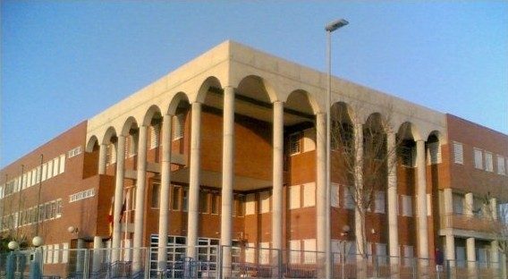
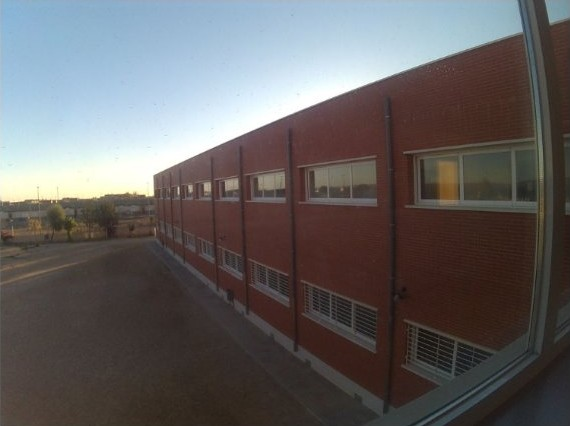
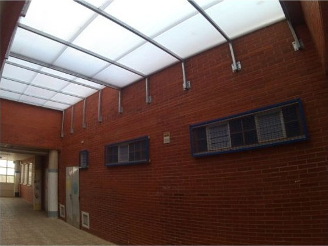
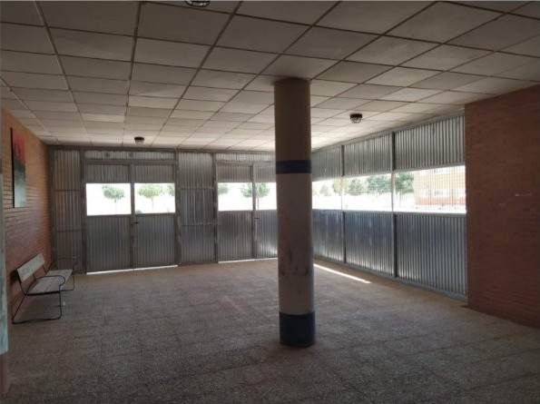
El equipo directivo está formado por los siguientes miembros.
Un recorrido completo en el mismo instituto, desde la educación secundaria hasta la formación profesional.
ESO · el centro ofrece además una sección bilingüe
Preparación para estudios universitarios y superiores
Preparación para estudios universitarios y superiores
Preparación para estudios universitarios y superiores
Ciclo de «Informática y Comunicaciones» · primer y segundo curso
Curso 2026/2027
ESO, Bachillerato y Formación Profesional
Información de matrícula para ESO y Bachillerato, F.P. Básica y ciclos formativos. La secretaría atiende de lunes a viernes, de 9:00 a 13:30 h.
Notas, AMPA y comunidad
Servicio complementario para el alumnado de fuera de Roldán que cursa ESO, F.P. Básica y Bachillerato en el centro.
Camachos 1 – Camachos 2 – Casas del Hondo – Casas del Pino – Redonda Balsicas/Infiernos – Triviños 1 – Triviños 2 – Los Infiernos – Balsicas Gasolinera – Balsicas Correos – Roldán
Con acompañanteBalsicas / CEIP Garre Alpáñez – Balsicas Correos – Roldán
Balsicas Gasolinera – Balsicas Correos – Roldán
Balsicas Gasolinera – Balsicas Correos – Los Martínez del Puerto – Roldán
Con acompañante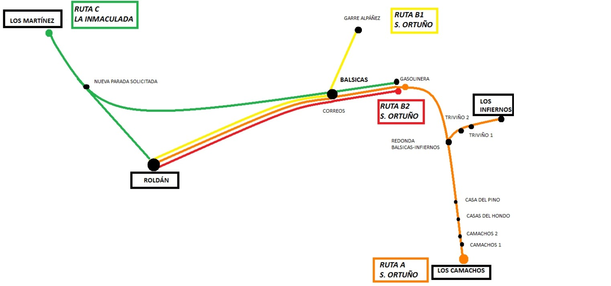
Esquema de las cuatro rutas de transporte escolar hasta el instituto.

El IES Sabina Mora participa en el programa Erasmus+, que abre al alumnado y al profesorado la posibilidad de conocer otros sistemas educativos y culturas de Europa, y desarrolla además otros proyectos educativos.
El IES Sabina Mora tiene su propio podcast en Spotify. Dale al play y escucha al alumnado y al profesorado del centro.
Hemos sido seleccionados como Escuela Mentora: un privilegio que nos permite tutorizar y guiar a los centros EPAS que nos sean asignados, ejercer un liderazgo territorial para promover iniciativas europeístas y colaborar con otros centros EPAS en actividades conjuntas.
Fuimos uno de los centros seleccionados como Escuela Embajadora de la Unión Europea en el curso 2021/2022.
Proyectos de modelado, impresión y escaneado 3D mediante Aprendizaje Basado en Proyectos (ABP), con objetivos motivadores y productos finales reales, desarrollados en materias como 3.º de Iniciación a la Investigación y 4.º de Informática.
Modelado e impresión 3D de una réplica del submarino inventado por Isaac Peral, capaz de navegar y sumergirse.
Ver en FacebookEscaneado e impresión 3D de los alumnos y profesores del centro educativo.
Ver vídeoEstos proyectos acercan la cultura y la tradición de la Región de Murcia al alumnado. Información del proyecto correspondiente al curso 2017-2018: «El Profundo Isaac» quedó en pausa y el instituto incorporó una nueva impresora 3D.
Planos y documentos del plan de evacuación del centro: planos generales, planos por planta del edificio principal y del edificio nuevo, e instrucciones para tutores, alumnado y coordinadores de planta.
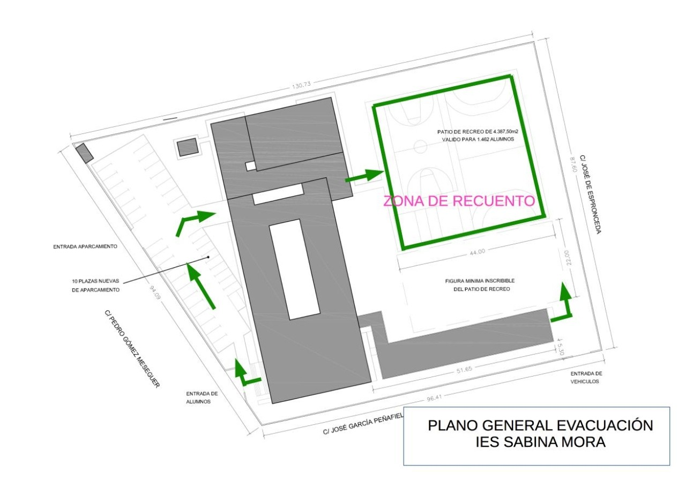
Plano general de evacuación · IES Sabina Mora
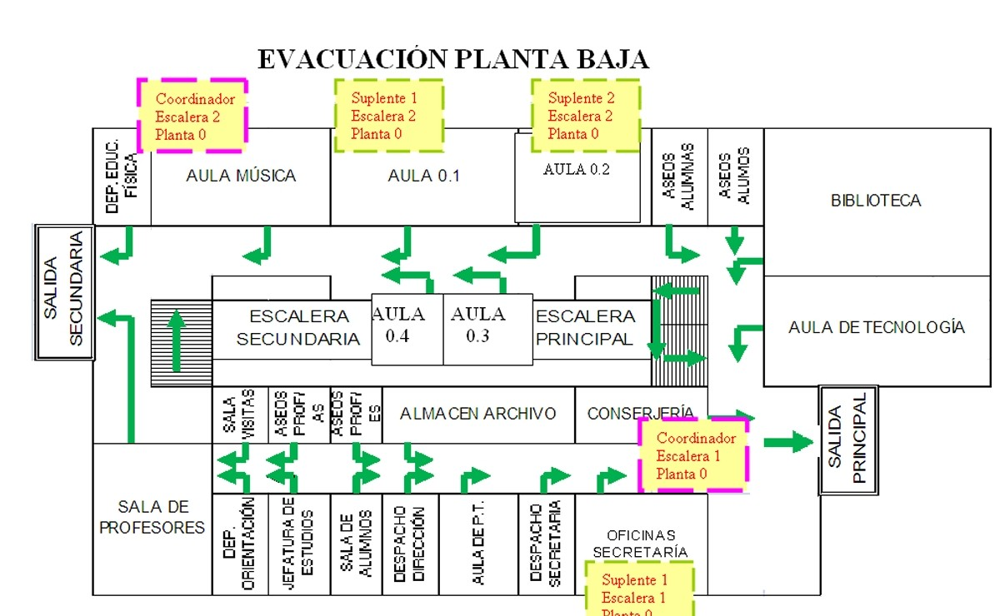
Planta bajaEdificio principal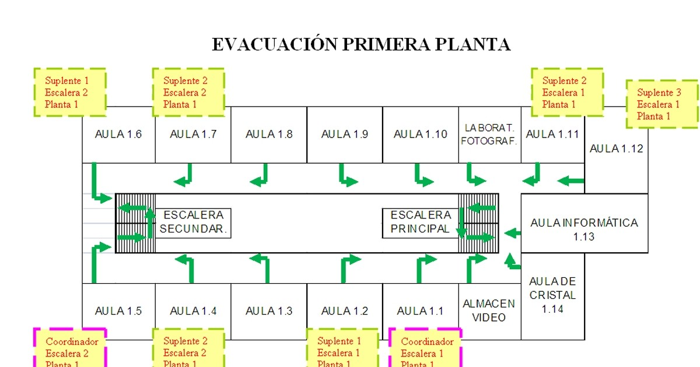
Primera plantaEdificio principal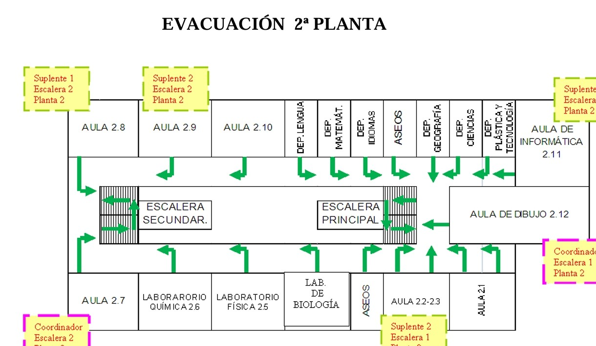
Segunda plantaEdificio principal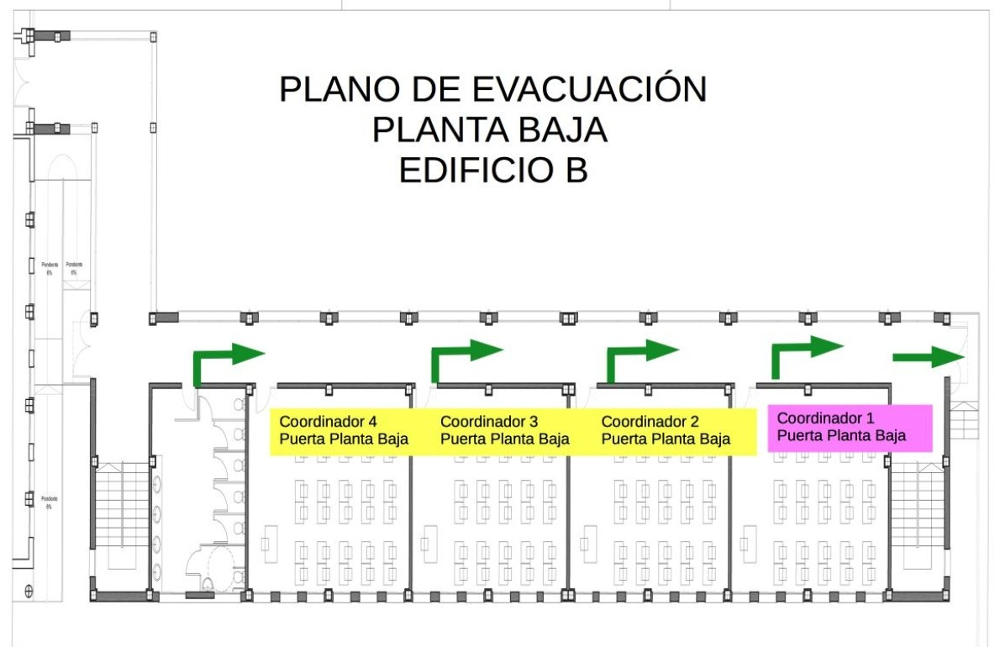
Planta bajaEdificio nuevo (B)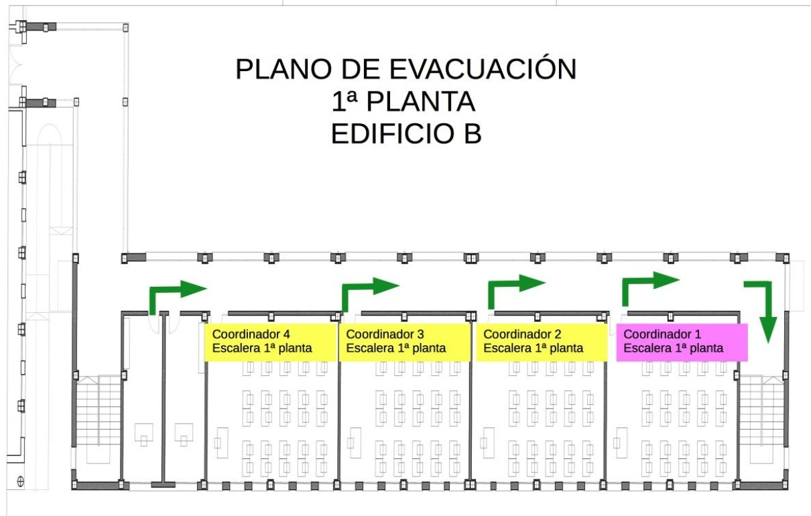
Primera plantaEdificio nuevo (B)Documentos oficiales del centro
Instrucciones para cada planta y edificio
30709 Roldán · Torre Pacheco · Región de Murcia